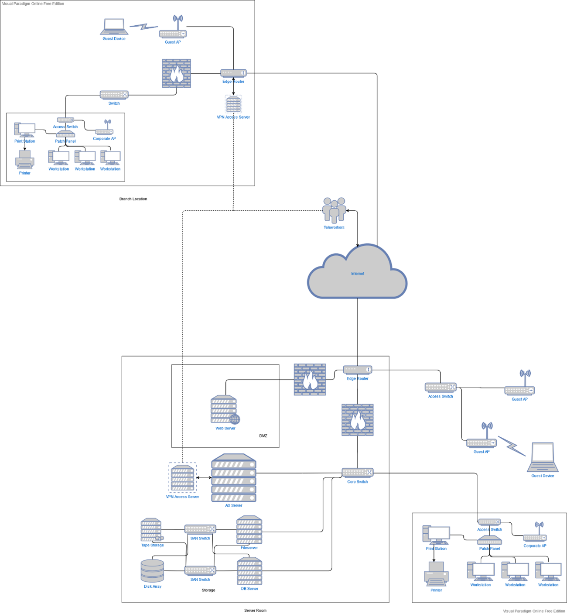

ITC 3319: Network Administration
- Resources
- Security & IT Policies
- Failure Prevention & Management
- Public Hosting & Remote Working
- Monitoring & Support
Resources
When considering the network that is to be transitioned to from the older mainframe system, a number of components that will be necessary to support the company’s operations in both the headquarters and branch locations was produced. Some of the networking hardware mentioned below will likely already be present I some form and may not need to be replaced (provided they are futureproof enough, judged on a case-by-case basis), but nonetheless no assumptions are being made.

The biggest considerations concern the head office location. Ironworks SA should have a dedicated server room available to house a small number of server racks carrying core functionality servers, and networking and storage devices.
Starting from the hardware that will be located in the server room, the first unit of import will of course be the new Windows Server 2019 system. The Windows Server operating system, Active Directory functionality, and all its associated features such as internal DNS resolution can easily be hosted on an appropriate dedicated tower PC unit, for instance a Dell PowerEdge Tower Server or Lenovo’s ThinkSystem ST line. This unit will use the inherent functionalities of the OS to maintain the Active Directory structure of the company across all sites, manage the internal employee user domain, provide internal DNS functionality, and oversee file and application access permissions.
A similar physical server component will be the web server. This will also be an analogous tower or rack form factor unit like the AD server above, which should provide ample functionality even as the company gets a gradual growth of internet traffic to their newly hosted web services. Both mentioned servers will be controllable both using a monitor and mouse & keyboard peripherals within the server room, along with over the network from the network admin’s workstation.
The two servers are advised to be set up using a RAID 1 scheme, a convenient local backup method which only requires two internal disk drives to utilize. This halves their disks’ effective storage, but is 1) negligible as they will not require too much internal storage for their operations anyway, and 2) valuable in allowing the servers to resume normal operations after a failure in one of the disks without any effective service interruptions.
In the realm of storage, the proposed storage area network scheme features two servers, one fileserver for file and application access, and one database server for management of the accounting data. If the company wishes they can be two distinct single-socket rack server units, or two virtualized units operating under a single physical server with two network interface cards.
For the actual data storage portion, an expandable storage array compatible with SSD, HDD, or hybrid configurations such as the Dell EMC SC5020/7020 products should prove far sufficient for Ironworks. Their expandability will efficiently futureproof the storage aspect as the company develops their operations for a long while to come. This disk array is recommended to be set up in a RAID 5 configuration to ensure data parity and take advantage of the numerous disks that will be present within the unit. For long-term backup and storage purposes it will be a good idea to also operate a tape drive storage unit like Dell PowerVault LTO Tape Drives. The primary reason for this is historical storage of the sales and accounting data that Ironworks aims to keep, which by their nature should have data loss avoided at any cost.

Moving on to the matter of networking, again within the server room, there should be some core hardware present. The first is an edge router to bridge connectivity between the internal company network and the internet as well as sustain WAN connectivity between locations and VPN remote access, like Cisco’s 1000 Series Integrated Service Routers. If a focus on stronger resilience and performance is needed the ISR 4000 series might be a better fit.
Relevant to this is the firewall, an indispensable core security feature for the business. The recommended edge routers feature robust internal firewalling capabilities, but it is possible the primary company building may require more sophisticated, dedicated software hardware, should an increased business and traffic bring with them increased security risks. The Cisco Firepower 100 Series will likely fit the small business’ needs well, though if they would prefer a more unified, cloud-managed solution, the Meraki MX line carries ample possibilities.
Next, a core switch (for example the Cisco Catalyst 4500-X series) will serve as the backbone of the network, connecting the edge router or firewall to most other components such as the Windows Server, the file and database servers, and the access switches leading to the workstations. It will require high throughput in order to manage most network traffic within the building and many requests from the branch locations to the AD and file servers.
Another group of switches are the two specialized SAN switches that enable connectivity between the file/database servers and the network storage devices. Having two, with each providing direct physical links between all servers and storage devices, affords full redundancy in the case of a failure of one of the switches which would otherwise entirely sever the communication with storage.
As complementary infrastructure for the purpose of uptime and disaster prevention, Uninterruptible Power Supply units should be present for the machines within the server room. Units large enough to provide uptime for all these devices during extended power losses will be considerably expensive and sizeable but may be considered worthwhile for Ironworks depending on their projected cost of downtime. Otherwise, a smaller rack-mounted unit will at least be sufficient to weather small power cuts and ensure graceful shutdowns during extended ones.
Depending on the size and layout of the company building there may be a varying number of network closets, each of them with an access switch connected to a patch panel, to serve the machines located in the internal employee network such as workstations, IP phones, and printers. The number, location, and model of each switch will be determined by physical restrictions such as port numbers needed to serve devices and distance covered to connect to said devices. For example, if the main building features 3 floors each will likely need to feature a small network closet with a switch and patch panel, connected to the corresponding switch on the floor below, to serve all devices without having ethernet range effectiveness problems.
There will also be one or more (again based on physical factors) access points to serve wireless devices, with different physical units serving employees and others for guests. The employee APs will be connected to the relevant nearest access switch mentioned above, but the guest APs will be connected to a different access switch communicating with the edge router, with different access filters to logically separate their traffic from the rest of the corporate network.
As far as the branch locations are concerned, they will follow the same general network structure at a much smaller scale. The main server room can be a simple closet setup, as the main likely features will be just an edge router and a switch. VPN functionality could be provided by a small dedicated server but it is much more likely that at such a small scale the same functionality can be a feature provided by the router. Communications concerning the Active Directory and company storage can be made over the internet to the main location through a WAN setup at all locations’ edge routers, effectively connecting them as part of the same internal corporate network. Like the main office, the number and location of switches and access points to serve employee devices will depend on the physical layout of each space.
Security & IT Policies
Strong security and IT policies should be enforced diligently to ensure the new system operates as expected, the company’s internal assets and employees are kept safe, and company integrity is maintained.
To start, the accounting, sales, and client as well as employee information handled by the new systems should be encrypted at rest, such as the disk storage arrays. In the event of a data breach, the goal is to prevent data from being successfully read by an attacker even if they manage to retrieve it. Access history data must also be kept, with network logs detailing when and from where data was retrieved to hopefully help identify the bad actors from both within and outside of the company.
Device authentication and password policies should also be strictly managed. User credential information is maintained by the Active Directory server and checked when someone attempts to log in on a workstation that has been registered to the company internal domain. Newly registered passwords should have formatting rules that produce a string complicated enough to prevent brute force attacks and not contain personal information that can be socially engineered from the employee (e.g. birth dates, family names, addresses). Employees should maintain a “clean desk” policy, not writing passwords and PINs on their desk or in drawers. Logged-in employees should also lock their workstations when stepping away from their office, even for a moment. No credentials should be exchange or shared with any other party, even IT personnel. If a credential change must be made, a member of IT should initiate a password reset from the AD server to give the user a temporary password that they then change themselves.
Internet use should be managed through firewalls and the internal DNS rules. Websites classified as “risky” should be strictly blocked, and general non-work-related sites or social media may need to be warned against or time-limited at the admin’s and management’s discretion. In either case, there should be some way (either programmatically or by showing the user a communication method) for users to report addresses that they believe have been erroneously blocked and submit them for re-review.
For maintaining proper file, storage, and application access, domain users should belong to appropriate user groups based on their department and needed permissions through AD. No access to unrelated resources should be given to unrelated resources otherwise without explicit permission given by IT admins.
To enforce and keep track of the previous and other policies, network admins should keep session statistics and monitoring to measure the resources used by employees. Automated tools that offer trend analysis based on that info will assist in identifying unwanted resource usage and access patterns pointing either to security concerns or simply negligent network usage. However, the IT admins must also have policies apply to them. More specifically, no extraneous logs should be kept without a need, and no “snooping” should be done on what is kept to identify other employees’ browsing patterns without reason. Administrators should maintain and check proper operations for the firewalls, anti-malware, and servers regularly and thoroughly, while also informing users when security risks or breaches are encountered in the interest of full disclosure. Finally, all other policies apply to all personnel without exceptions.
Besides policies like the above that can be enforced practically through server and network access rules, there are many policies that users need to be trusted with concerning their own behaviors. While they cannot be enforced in the same way as the previous, they can nonetheless be listed on employee contracts that outline the responsibilities the company expects each member of staff to follow during their employment.
Those user policies include confidentiality of financial info, customer lists, and any other insider knowledge that would be detrimental to the company should they be share with outsider parties. There should be a commitment to secure data transfer of this type of information only over the private WAN and never using online upload tools. Any data that for some reason does need to be taken outside of the corporate network should be done only with earlier authorization and likely using encryption. Finally, all employees are expected to report suspicious activity, emails, links, on-location presences, or missing corporate equipment to the relevant security personnel immediately. If equipment is stolen or lost IT admins should reset the applicable user’s credentials just in case.
Guests on the premises should only be allowed to connect to the guest network APs, and never given access to company credentials or otherwise.
Failure Prevention & Management
Care was put into ensuring the given design can adapt to failures well with minimal operating downtime. It was judged that the primary focus should be placed on proactive disaster prevention methods due to the nature of the information kept and the characteristics of the network.
As mentioned in the hardware section, many components feature various hardware and software redundancies. The AD, file/database, and web servers are suggested to employ a RAID 1 internal data storage virtualization scheme to combine pairs of physical data drives into single redundant logical drive that is resistant to one disk in the pair failing. While the effective storage is halved, none of those servers require ample data storage in and of themselves and faulty disk replacement can be performed in very short time if substitute drives are kept within reach. The storage array should utilize RAID 5, a more storage-efficient configuration with data parity distributed across all disks in the array to minimize risks of data loss without heavily impacting I/O performance. It too can continue operating in the case of single disk failure without any downtime and replacement is quick and simple.
Many components in the proposal are suggested to feature some form of redundancy based on their importance and the impact downtime would have to company operations. For the Active Directory server it is a good idea to have a similar or slightly less powerful tower available on premises on standby to serve as a failover system. The reasoning behind this is that the primary AD server is responsible for such a wide array of critical business operations (access permissions, user group management, authentication, DNS resolution) that, in the case of major failure, many of the company’s internal functionality will be crippled for an extended period of time. Beyond its RAID setup, full backups can be performed either through the OS’s inbuilt incremental backup functionality or an external imaging solution.
Another proposed duplicate system is the pair of SAN switches stated in the storage hardware section above. These switches are specialized hardware that, unlike the standard servers, the company will not have readily available substitute units in the case of hardware failure, hence the recommendation of operating two in parallel. As an added benefit, in the case of lesser failure around one of the switches (i.e. to the cabling between it and other components) the other unit will maintain normal operation for the network while the issue is being handled.
Out of most disasters that might be encountered, power loss is perhaps one of the more likely ones. This is why the presence of UPS units was suggested above, the capacity of which will be judged based on the company’s acceptable recovery time. It should also be noted that many of the hardware units suggested in the proposal also feature dual-power supplies which should be taken advantage of as insurance in the case of faulty power sockets.
Since Ironworks aim to store accounting and sales data, the long-term tape storage solution was brought forth. The nature of transactional data that Ironworks seeks to maintain is such that it would be in the company’s best interest to not lose any such data regardless of how long ago it was collected. As such, when these records are believed to be too old enough to require instant retrieval at any time, they can be transferred to magnetic tape storage and kept offsite for long-term data retention reliability along with disaster prevention.
Public Hosting & Remote Working
One of the more important differences that Ironworks sought to feature following the system transition is the ability to host their own website on-premises and allow secure remote access from outside the company for employees. There is a combination of practical, network, and software considerations at play to arrange this.
A primary concern is that of security, as exposing internal components to the broader internet is not something that should be undertaken lightly. The inherent risks with providing a public service are numerous and practically guaranteed to be encountered in some way. Logically segmenting the webserver off from the rest of the network to avoid exposing other components to the internet is done through instating a network demilitarized zone. The key factor in achieving this is having a unique set of firewalling rules for the webserver compared to the rest of the internal network, overseeing both the nature and source of packets intended for the webserver and, perhaps more importantly, preventing any unwanted communication between the (potentially compromised) webserver and the internal network.
Concerning the hosting itself, a webserver does not need to be a sophisticated powerhouse to serve the company’s purpose. Considering Ironworks’ field of operations and prospective clients, the company is not like to require something that can handle extremely high-traffic situations and dynamic website capabilities. The suggested simple server unit operating a Windows Server or GNU/Linux operating system providing a static web site over HTTP web server software such as Apache or Nginx, with added intrusion prevention software (i.e. Fail2Ban) is plentifully sufficient for the given use case.
Moving on to remote access, a key functionality that will be likely only be considered increasingly necessary with time. In the past, to have this functionality would have necessitated adding a separate (dedicated or virtualized) device likely logically located within the aforementioned DMZ that remote users can interact with to be granted Virtual Private Network functionality and connect with the internal corporate network. In our current design this will not be necessary, as this functionality can be provided directly by the edge router itself. For example, the recommended Cisco ISR 1000 products feature inbuilt IPSec and SSL VPN functions that can be utilized with their own AnyConnect software or many other SSL VPN clients for access from remote laptops, PCs, or mobile devices.
This, of course, compounds the need for adequate security conventions and policies that are actively enforced to ensure the exposure to internet devices does not bring harm to the network and employees within.
Monitoring & Support
Inherently, none of the infrastructure or disaster prevention are relevant if potential issues or instabilities cannot be detected ahead of time or even while they are happening, compromising the smooth operation of the network and bringing availability down for both employees and clients. Monitoring is a vital aspect of operations that can expose and aid in addressing an array of issues either accidental or malicious, ideally before they even start hindering performance, and should be deployed on all applicable devices. Full-featured infrastructure monitoring suites, such as Nagios, will be used to automatically observe network traffic for suspicious or uncharacteristic activity, servers for extraneous resource usage or suspicious processes, and manage logs for posterity to help prevent future instances of similar complications from resurfacing or, at the very least, provide guidance for how to tackle them more effectively when they do.
Naturally, there are problems that are not exposed in a way that monitoring software can identify or are not even relevant to such software. Having the ability to accept feedback and requests directly from clients will be pertinent to smooth business operation and service improvements. To this end, a ticketing-based helpdesk solution that can collect request from multiple avenues will be ideal for having the ability to take feedback in a manageable way that the staff can get to and keep track of at their own pace. A platform such as Freshdesk will give the team the ability to receive support requests in that way, through email, social media, chat, or versatile chatbots deployed on their website. A service that is cloud-hosted in this way also eliminates the need to purchase more hardware or allocate virtual resources and expose yet another device to the internet, minimizing security risks while allowing employees to review and respond to support requests from any device or location using just a browser.